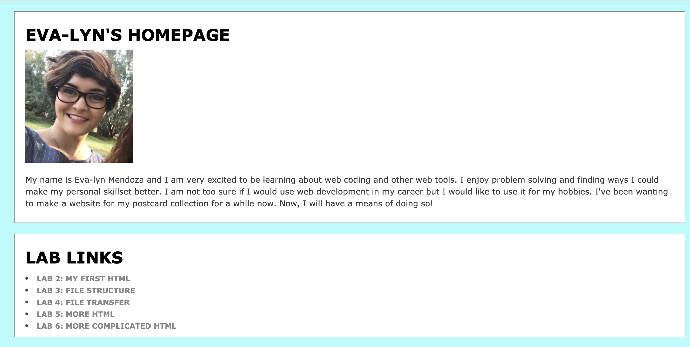
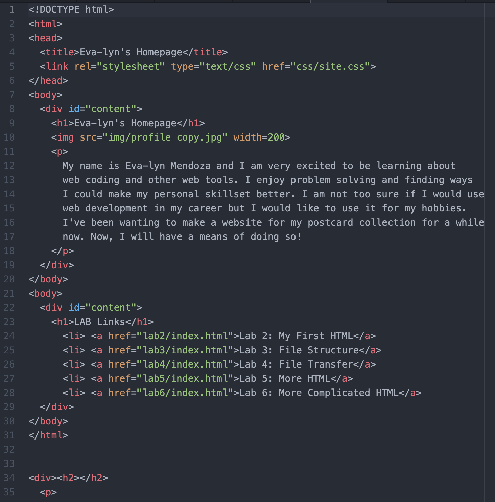

File Structures
The idea of this assignment was to work with a partner to understand file structure and how it influences the links in our index.html files.
Challenges
Before working with my partner Leo I wanted to mess around with the css for my labs. I wanted to make my labs a seperate color from my home page. This wasn't required in the assignment but it helped me realize the importance of file structures and how files are found and linked in HTML. It took me a while to find out how to link my second css file to my labs. After looking at the lecture again, I realized that since I put my second css file in the parent css file I could link the file to my labs by using "..". Linking my labs to ../css/site2.css became successful.
With my partner leo we worked on getting our screenshot images into our lab 3 folder and lab 3 webpage. We also added CSS to our labs and homepage.
Results
 